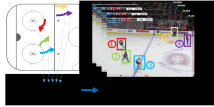

{kind=link}
graph LR
A["Text:<br/>The quick brown fox jumps over the lazy dog"] --> B["Tokens:<br/>['The','quick','brown','fox','jumps','over','the','lazy','dog']"]
B --> C["Token IDs (example):<br/>[102, 451, 317, 890, 775, 233, 117, 642, 508]"]
C --> D["Embeddings:<br/>each ID -> vector in R^d"]
D --> E["Model computes with vectors (attention, etc.)"]
The Modern AI Playbook
If you tell me precisely what it is a machine cannot do, then I can always make a machine which will do just that. —John von Neumann (1956)
When you open an Amazon page, there are many personal suggestions of goods to purchase. By analyzing previous product pages visited and purchases made by you and others who have bought similar products, Amazon uses AI and machine learning to predict what might interest you the next time you shop. When you apply for a loan online, you typically get an immediate answer after filling out an application. The information you provide, combined with your credit history pulled from a credit bureau, is used by a predictive model to determine with high confidence whether you are likely to default on the loan.
What do Amazon, the finance industry, and a championship-winning baseball franchise have in common? They all use AI-driven methods to improve operations. Ability to automate tasks allows to scale operations and perform tasks that are too complex for humans to perform. AI-driven methods are becoming increasingly important in all industries.
What are the key ingredients of AI-driven methods? At the heart of modern AI lie three fundamental pillars: deep learning architectures that extract hierarchical patterns from raw data by composing simple operations across many layers, Bayesian statistical frameworks that quantify uncertainty and update beliefs as evidence arrives, and high-performance computing infrastructure—particularly GPUs originally designed for gaming—that makes processing billion-parameter models and massive data sets feasible. Deep learning provides the representational power to capture complex relationships in high-dimensional data, enabling language models to represent subtle nuances of syntax and semantics while image recognition systems distinguish thousands of object categories by learning features from pixels to edges to shapes to objects. Bayesian methods complement this by providing a principled framework for reasoning under uncertainty, telling us how to interpret probabilistic predictions, incorporate prior knowledge, and update beliefs with new data—capabilities essential in scientific applications from drug discovery to climate modeling where quantifying uncertainty is as important as making predictions. The interplay between these three pillars creates a virtuous cycle: as computing power grows, we train larger models that capture increasingly sophisticated patterns while Bayesian frameworks quantify what they know and don’t know. Let’s start by trying to understand how deep learning fits within the broader landscape of data science, machine learning, and artificial intelligence.
Data Science is a relatively new field that refers to sets of mathematical and statistical models, algorithms, and software that extract patterns from data sets. The algorithms are adaptations of applied mathematics techniques to specific computer architectures, and the software implements those algorithms.
Machine learning (ML) applies AI models to design predictive rules for forecasting and what-if analysis. For example, companies use predictive models to optimize marketing budgets or forecast shipping demand. A machine-learning system is trained rather than explicitly programmed—it’s presented with many examples relevant to a task and finds statistical structure that allows it to automate that task. For instance, to automate tagging vacation pictures, you would present the system with examples of tagged photos, and it would learn rules for associating pictures with tags. Tools from statistics serve as a basis for many machine learning algorithms.
Artificial Intelligence has been around for decades. The term AI was coined by the famous computer scientist John McCarthy in 1955. While initially connected to robotics, currently, AI is understood as a set of mathematical tools used to develop algorithms that perform tasks typically done by humans, such as driving a car or scheduling a doctor’s appointment. This set of mathematical tools includes probabilistic models, machine learning algorithms, and deep learning.
Deep learning is a type of machine learning that performs a sequence of transformations (filters) on data. The output of each of those filters is called a factor in traditional statistical language and a hidden feature in machine learning. The word “deep” means that there is a large number of filters that process the data. The power of this approach comes from the hierarchical nature of the model.
A major difference between modern and historical AI algorithms is that most recent AI approaches rely on learning patterns from data. For example, IBM’s Deep Blue, the chess-playing computer that famously defeated world champion Garry Kasparov in 1997, was “hardcoded” with explicit rules and strategies designed by chess experts and IBM engineers. Deep Blue evaluated millions of chess positions per second using carefully programmed evaluation functions that assigned scores to board positions based on material advantage, piece positioning, king safety, and other strategic factors. These evaluation criteria were implemented as if-then statements and heuristics crafted by human experts rather than learned from data. On the other hand, the modern AlphaGo Zero algorithm did not use any human inputs and learned optimal strategies to play chess and other board games from large data sets generated from self-plays. Although handcrafted systems like Deep Blue performed well in some tasks, such as chess playing, they are hard to design for many complex applications, such as self-driving cars. Large data sets allow us to replace sets of rules designed by engineers with sets of rules learned automatically from data. Thus, learning algorithms, such as deep learning, are at the core of most modern AI systems.
The key concept behind many modern AI systems is pattern-recognition. A “pattern” is a prediction rule that maps an input to an expected output, and “learning a pattern” means fitting a good prediction rule to a data set. In AI, prediction rules are often referred to as “models.” The process of using data to find a good prediction rule is often called “training the model.” Mathematically, we can express this as learning a function \(f\) that maps inputs \(x\) to outputs \(y\), so that \(y = f(x)\). For instance, in large language model, \(x\) represents a question and \(y\) represents the answer. The learning process involves finding the function \(f\) that best captures the relationship between inputs and outputs by examining many examples of input-output pairs in a training dataset. Deep learning excels at discovering complex, nonlinear functions \(f\) when the relationship between \(x\) and \(y\) is too intricate to specify manually—such as the mapping from raw pixel values to semantic image content, or from question and answer to text.
The strong demand for AI talent has translated into substantial compensation premiums for students entering the field. According to the 2025 AI Talent Salary Report, AI professionals command a median salary of $160,000 annually, with a 28% premium over traditional tech roles. Entry-level AI engineers earn between $70,000 and $120,000, with specialized roles like computer vision engineers starting at $140,043. Importantly for students, specialization matters significantly: Large Language Model (LLM) engineers earn 25-40% more than general ML engineers, while AI Safety and Alignment specialists have seen 45% salary increases since 2023. The report emphasizes that companies hiring AI talent early pay 15-20% less than those waiting, suggesting that new graduates who enter the market quickly may benefit from competitive starting salaries as organizations rush to build AI capabilities.
AIQ, AGI and ASI
“I visualize a time when we will be to robots what dogs are to humans. And I am rooting for the machines.” - Claude Shannon
“Let us suppose we have set up a machine with certain initial instruction tables, so constructed that these tables might on occasion, if good reason arose, modify those tables. One can imagine that after the machine had been operating for some time, the instructions would have altered out of all recognition, but nevertheless still be such that one would have to admit that the machine was still doing very worthwhile calculations. Possibly it might still be getting results of the type desired when the machine was first set up, but in a much more efficient manner. In such a case one would have to admit that the progress of the machine had not been foreseen when its original instructions were put in. It would be like a pupil who had learnt much from his master, but had added much more by his own work. When this happens I feel that one is obliged to regard the machine as showing intelligence.” – Alan Turing
People, organizations, and markets interact in complex ways. AI facilitates organization and hence connects people to markets faster and more simply. Hence it creates economic value. Most of the recessions in the 19th century were a result of not being able to get goods to markets quickly enough, which led to banking crises. AI accelerates speed to market. It creates growth. The age of abundance is here.
Andrej Karpathy’s talk, “Software Is Changing (Again),” explores how large language models (LLMs) are fundamentally transforming the way software is developed and used. He describes this new era as “Software 3.0,” where natural language becomes the primary programming interface and LLMs act as a new kind of computer. He compares it to the previous generations of software development approaches summarized in the table below.
| Paradigm | “Program” is… | Developer’s main job | Canonical depot |
|---|---|---|---|
| Software 1.0 | Hand-written code | Write logic | GitHub |
| Software 2.0 | Neural-net weights | Curate data & train | Hugging Face / Model Atlas |
| Software 3.0 | Natural-language prompts | Compose/police English instructions | Prompt libraries |
Currently, LLMs are collaborative partners that can augment human abilities, democratizing software creation and allowing people without traditional programming backgrounds to build complex applications simply by describing what they want in plain English.
Polson and Scott (2018) have predicted that human-machine interaction will be the next frontier of AI.
Hal Varian’s 2010 paper “Computer Mediated Transactions” Varian (2010) provides a foundational framework for understanding how computers can automate routine tasks and decision-making processes, reducing transaction costs and increasing efficiency. This includes automated pricing, inventory management, and customer service systems. He discusses systems that can coordinate between multiple parties by providing real-time information sharing and communication platforms. This enables more complex multi-party transactions and supply chain management.
This framework remains highly relevant for understanding modern AI and machine learning applications in business, as these technologies represent the next evolution of computer-mediated transactions, enabling even more sophisticated automation, coordination, and communication capabilities.
Large Language Models (LLMs)
The adoption rate of AI technologies, particularly generative AI like ChatGPT, has shattered all previous records for technology adoption. While it took the internet 7 years to reach 100 million users, the telephone 75 years, and television 13 years, ChatGPT achieved this milestone in just 2 months after its launch in November 2022. This unprecedented speed of adoption reflects not just the accessibility of AI tools, but also their immediate utility across diverse user needs. Unlike previous innovations that required significant infrastructure changes or learning curves, AI chatbots could be accessed through simple web interfaces and provided immediate value for tasks ranging from writing assistance to problem-solving. The viral nature of AI adoption has been further accelerated by social media demonstrations and word-of-mouth sharing of impressive AI capabilities, creating a network effect that compounds the growth rate. This rapid adoption suggests that AI represents a fundamentally different type of technological shift - one that augments human capabilities rather than replacing existing systems entirely. The chart below illustrates the explosive growth potential of AI technologies.
The algorithmic aspects of deep learning (the main building block of an AI system) have existed for decades. In 1956, Kolmogorov showed that any function can be represented as a superposition of univariate functions (this is exactly what deep learning does). In 1951, Robbins and Monro proposed stochastic approximation algorithms. Combined with regularization methods developed by Andrey Tikhonov in 1940s and 1950s, the stochastic approximation is the main technique for finding weights of a deep learning model today. The backpropagation algorithm for finding derivatives was first published and implemented by Werbos in 1974. In the mid-1980s, Schmidhuber studied many practical aspects of applying neural networks to real-life problems. Since the key ingredients of DL have been around for several decades, one could wonder why we observe a recent peak in popularity of those methods. Modern AI models are enabled by the old math and the new powerful GPU chips, which provide the parallel processing capabilities necessary to train deep neural networks on large datasets. The breakthrough in deep learning around 2012, including innovations like AlexNet for image recognition, would not have been possible without GPUs that could perform thousands of matrix multiplications simultaneously. Current AI models, including ChatGPT, Claude, and other large language models, continue to rely primarily on GPUs for both training and prediction. Modern AI training clusters consist of thousands of interconnected GPUs working together for weeks or months to process the enormous datasets required for today’s sophisticated models. While some companies have developed specialized AI chips like Google’s TPUs, GPUs remain the dominant platform for AI development due to their versatility, widespread availability, and established software ecosystems.
The gaming industry was one of the earliest drivers of GPU development, as game developers demanded increasingly sophisticated graphics rendering capabilities to create immersive virtual worlds with realistic lighting, textures, and physics simulations. Companies like NVIDIA and AMD invested heavily in parallel processing architectures optimized for the matrix operations required to render complex 3D scenes in real-time. The rise of cryptocurrency mining, particularly Bitcoin and Ethereum, created an unexpected second wave of GPU demand as miners discovered that graphics cards were far more efficient than traditional CPUs for the repetitive hash calculations required by proof-of-work algorithms. This mining boom drove massive investments in GPU manufacturing capacity and spurred innovations in memory bandwidth and energy efficiency. More recently, the explosion of AI-generated video content has created a third major demand driver, as video generation models require enormous computational power to process and synthesize high-resolution video frames. The convergence of these three use cases - gaming graphics, cryptocurrency mining, and AI video generation - has accelerated GPU development far beyond what any single application could have achieved alone, creating the powerful hardware infrastructure that now enables training of large language models and other AI applications.
Table 1 illustrates the dramatic evolution of GPU performance over two decades, from early graphics cards to specialized AI accelerators. The data shows exponential growth in computational power: from the modest 0.23 TeraFLOPS of the 2006 GeForce 7900 GTX to the projected 100 PetaFLOPS (FP4) of the 2027 Rubin Ultra - representing a performance increase of over 400,000x. Here FP4 is a lower precision (4-bit) floating-point arithmetic that is used for AI workloads. It is an alternative to FP32 (32-bit) floating-point arithmetic that is used for general purpose computing. Memory capacity has similarly exploded from 0.5GB to a projected 1TB. Modern GPUs have evolved from simple graphics processors to sophisticated AI-optimized architectures featuring specialized tensor cores, mixed-precision arithmetic (FP8/FP4), and massive high-bandwidth memory systems. The transition from traditional FP32 floating-point operations to lower-precision AI workloads (FP8/FP4) has enabled unprecedented computational throughput measured in PetaFLOPS and ExaFLOPS scales, making current and future GPUs the primary engines driving the deep learning revolution and large language model training.
| Year | Architecture | FP32 Peak (TeraFLOPS) | FP8/FP4 Peak (Peta/ExaFLOPS) | Memory (per GPU) |
|---|---|---|---|---|
| 2006 | GeForce 7900 GTX | 0.23 | 0.5GB GDDR3 | |
| 2016 | GeForce GTX 1080 | 8.9 | 8GB GDDR5X | |
| 2024 | RTX 4070 SUPER | ~32 | 12GB GDDR6X | |
| 2024 | Blackwell B200 | ~45 (FP64) | 20 PFLOPS (FP4) / 1.4 ExaFLOPS (AI cluster) | 288GB HBM3e |
| 2026 | Rubin VR300 | 50 PFLOPS (FP4) / 1.2 ExaFLOPS (FP8, rack) | 288GB HBM4 | |
| 2027 | Rubin Ultra | 100 PFLOPS (FP4) / 5 ExaFLOPS (FP8, rack) | 1TB HBM4e (per 4 dies) |
Now AI models are the main consumers of those processors. The most popular of those are ChatGPT-4, Anthropic’s Claude and Perplexity. ChatGPT-4 is based on the transformer architecture. It is able to handle long conversations and maintain better context over multiple turns. It is stronger in creative writing, technical writing, reasoning tasks, and code generation. It has better performance on logic-heavy tasks and answering technical queries. It is mainly used for chatbots, automated content creation, code writing, customer support, and more advanced AI tasks.
The computational demands of AI tasks scale exponentially, as illustrated in Figure 1: while a single-shot chatbot represents the baseline (1x), image generation requires ~10x more compute, reasoning tasks need ~100x, video generation demands ~3,000x, and deep research capabilities require over 1,000,000x the baseline. This exponential scaling, based on estimates from OpenAI, Nvidia, and Melius Research, explains why AI companies face persistent capacity constraints despite massive infrastructure investments. As users demand more sophisticated capabilities, the infrastructure requirements grow super-linearly, making access to computational resources an increasingly critical competitive advantage.
However, instead of measuring computing requirements using traditional floating-point arithmetic (FLOPS), the commercial LLM models use token as a unit of computation. A token is a unit of text that is processed by the model. It is typically a word or a phrase. The number of tokens is the number of words or phrases that are processed by the model as inputs or outputs. Two-tree years ago, when you had to adopt an LLM model for a specific tasks, you had to perform fine-tuning of the model. It involved updating the parameters of the model to make it more suitable for your specific task. However, now you will find spend less computing power on fine-tuning and more on using the model as-is and simply providing the tasks-specific instructions and data sets as model context.
OpenAI, the company behind ChatGPT, has experienced remarkable growth in both valuation and revenue. As of late 2024, OpenAI reached a valuation of $157 billion following its latest funding round, making it one of the most valuable private companies in the world. The company’s annual recurring revenue (ARR) has grown exponentially, reaching approximately $3.7 billion in 2024, driven primarily by ChatGPT subscriptions and API usage. OpenAI has raised over $13 billion in total funding, with major investors including Microsoft, which has invested $13 billion and maintains a strategic partnership that includes exclusive cloud computing arrangements. This rapid financial growth reflects the massive demand for generative AI capabilities across industries and the transformative potential of large language models.
Claude is the main competitor of OpenAI. It is supported by Amazon and excels at complex reasoning tasks, problem-solving, and in-depth analysis across a wide range of domains. Claude can write, debug, and explain code in many programming languages. It can analyze images and documents in addition to text and can engage in various conversation styles, from formal analysis to creative writing to casual discussion.

Amazon has made a significant strategic investment in Anthropic, Claude’s creator, committing up to $4 billion to advance AI safety research and development. This partnership positions Amazon Web Services (AWS) as Anthropic’s primary cloud provider while giving Amazon a minority ownership stake in the company. Unlike ChatGPT, which excels in creative writing and general-purpose conversations, Claude is specifically designed with a focus on safety, harmlessness, and nuanced reasoning. Claude demonstrates superior performance in tasks requiring careful analysis, ethical reasoning, and handling sensitive topics. It employs Constitutional AI training methods that make it more reliable in avoiding harmful outputs and better at acknowledging uncertainty when it doesn’t know something. Recent advances in Claude 3.7 and Claude 4.0 have introduced groundbreaking multimodal capabilities, allowing these models to process and analyze images, documents, and code with unprecedented accuracy. Claude 4.0 represents a significant leap forward in mathematical reasoning, coding assistance, and complex problem-solving tasks, with performance improvements of 40-60% over previous versions in benchmark evaluations. These newer models feature enhanced “thinking” processes that are more transparent, often explaining their reasoning step-by-step with greater depth and clarity, which makes them particularly valuable for educational applications, research assistance, and professional analysis where understanding the AI’s decision-making process is crucial. Claude 4.0 also introduces improved long-context understanding, capable of processing documents up to 200,000 tokens, and demonstrates remarkable advances in scientific reasoning and technical writing. This approach has made Claude increasingly popular among researchers, academics, and professionals who require more thoughtful and contextually aware AI assistance.
Perplexity synthesizes information from multiple sources and presents it with proper citations. Each response includes references for easy verification. It functions as a conversational search engine. Perplexity has emerged as a formidable competitor to Google Search by offering a fundamentally different approach to information discovery. Unlike traditional search engines that provide links to websites, Perplexity acts as an AI-powered research assistant that directly answers questions while citing sources. The company has attracted significant investment, including backing from Amazon founder Jeff Bezos, who participated in Perplexity’s $74 million Series B funding round in 2024. This strategic investment reflects growing confidence in AI-first search alternatives that could disrupt Google’s longstanding dominance in the search market.
The company has also developed innovative partnerships with major brands like Marriott and Nike, demonstrating how AI search can be integrated into enterprise applications. Marriott has explored using Perplexity’s technology to enhance customer service by providing instant, cited answers about hotel amenities, local attractions, and booking policies. Similarly, Nike has experimented with Perplexity’s capabilities to help customers find specific product information, sizing guides, and availability across different locations. These enterprise partnerships showcase Perplexity’s potential to move beyond general web search into specialized, domain-specific applications.
Perplexity’s advertising model differs significantly from Google’s traditional approach. Rather than displaying ads alongside search results, Perplexity is exploring sponsored answers and branded content integration that maintains the conversational flow while clearly identifying commercial partnerships. This approach could prove less intrusive than traditional search advertising while providing new revenue streams. The company’s growth trajectory and enterprise adoption suggest it could pose a meaningful challenge to Google’s search monopoly, particularly among users who prefer direct answers over browsing multiple websites.
The explosive growth of Large Language Models (LLMs) like ChatGPT, Claude, and Perplexity has been fundamentally enabled by the vast repositories of digital text that have accumulated over the past three decades. The “fuel” powering these sophisticated AI systems comes from an unprecedented collection of human knowledge digitized and made accessible through the internet. Wikipedia alone contains over 60 million articles across hundreds of languages, representing one of humanity’s largest collaborative knowledge projects. Web crawling technologies have systematically captured billions of web pages, blog posts, news articles, and forum discussions, creating massive text corpora that encode diverse writing styles, domains of expertise, and forms of human expression. The digitization of literature through projects like Google Books and Internet Archive has made millions of books searchable and processable, from classical literature to technical manuals. Social media platforms have contributed streams of conversational text, while academic databases provide formal scientific and scholarly writing. This digital text explosion created training datasets containing trillions of words - orders of magnitude larger than what any human could read in multiple lifetimes. By processing these enormous text collections through transformer architectures, LLMs learned statistical patterns of language use, absorbing grammar, syntax, semantics, and even reasoning patterns embedded in human writing. The models discovered how words relate to each other, how concepts connect across different contexts, and how to generate coherent, contextually appropriate responses by predicting the most likely next word given preceding text. This approach allowed AI systems to develop surprisingly sophisticated language understanding and generation capabilities without explicit programming of linguistic rules, instead learning the deep structure of human communication from the collective digital footprint of our species.
The mathematical operations used for manipulating and rendering images are the same as those used in deep learning models. Researchers started to use graphical processing units (GPUs) (a.k.a graphics cards) to train deep learning models in the 2010s. The wide availability of GPUs made deep learning modeling accessible for a large number of researchers and engineers and eventually led to the popularity of DL. Recently, several competitive hardware architectures were developed by large companies like Google, which uses its own TPU (Tensor Processing Units) as well as smaller start-ups.
This course will focus on practical and theoretical aspects of predicting using deep learning models. Currently, deep learning techniques are almost exclusively used for image analysis and natural language processing and are practiced by a handful of scientists and engineers, most of whom are trained in computer science. However, modern methodologies, software, and the availability of cloud computing make deep learning accessible to a wide range of data scientists who would typically use more traditional predictive models such as generalized linear regression or tree-based methods.
A unified approach to analyze and apply deep learning models to a wide range of problems that arise in business and engineering is required. To make this happen, we will bring together ideas from probability and statistics, optimization, scalable linear algebra, and high-performance computing. Although deep learning models are very interesting to study from a methodological point of view, the most important aspect of those is the predictive power unseen before with more traditional models. The ability to learn very complex patterns in data and generate accurate predictions makes deep learning a useful and exciting methodology to use. We hope to convey that excitement. This set of notes is self-contained and has a set of references for a reader interested in learning further.
Although basics of probability, statistics, and linear algebra will be revisited, this book is targeted towards students who have completed a course in introductory statistics and high school calculus. We will make extensive use of computational tools, such as R language, as well as PyTorch and TensorFlow libraries for predictive modeling, both for illustration and in homework problems. There are many aspects of data analysis that do not deal with building predictive models, for example, data processing and labeling can require significant human resources(Hermann and Balso 2017; Baylor et al. 2017). Those are not covered in this book.
Enterprise LLM Applications
Large language models are rapidly transforming business operations across industries, creating measurable economic value through automation, enhanced decision-making, and new product capabilities. In customer service, companies report 30-50% reductions in support costs by deploying LLM-powered chatbots that handle routine inquiries while escalating complex issues to human agents. Financial institutions use LLMs for document analysis, extracting key information from contracts, regulatory filings, and legal documents at speeds and accuracy levels that far exceed manual review. Software development has been revolutionized by AI coding assistants like GitHub Copilot, with studies showing developers completing tasks 55% faster when using AI assistance. In healthcare, LLMs assist with clinical documentation, reducing physician administrative burden by automatically generating visit summaries and insurance prior authorization requests. Marketing and content creation industries leverage LLMs for generating product descriptions, email campaigns, and social media content, with some companies reporting 10x increases in content production capacity. Legal firms deploy LLMs for contract review, due diligence, and legal research, compressing weeks of associate work into hours. The pharmaceutical industry uses LLMs to analyze scientific literature and accelerate drug discovery by identifying promising compounds and predicting molecular interactions. Consulting firms employ LLMs to synthesize market research, generate client deliverables, and perform competitive analysis. Education platforms integrate LLMs for personalized tutoring, automated grading, and adaptive learning systems that adjust to individual student needs. Collectively, these applications represent billions of dollars in productivity gains and are fundamentally reshaping knowledge work across sectors, making AI literacy increasingly essential for business professionals and creating strong demand for practitioners who can effectively deploy these technologies.
In his talk on “Why are LLMs not Better at Finding Proofs?”, Timothy Gowers discusses that while large language models (LLMs) can display some sensible reasoning—such as narrowing down the search space in a problem—they tend to falter when they get stuck, relying too heavily on intelligent guesswork rather than systematic problem-solving. Unlike humans, who typically respond to a failed attempt with a targeted adjustment based on what went wrong, LLMs often just make another guess that isn’t clearly informed by previous failures. He also highlights a key difference in approach: humans usually build up to a solution incrementally, constructing examples that satisfy parts of the problem and then refining their approach based on the requirements. For example, when trying to prove an existential statement, a human might first find examples satisfying one condition, then look for ways to satisfy additional conditions, adjusting parameters as needed. LLMs, by contrast, are more likely to skip these intermediate steps and try to jump directly to the final answer, missing the structured, iterative reasoning that characterizes human problem-solving.
While there are indeed limitations to what current large language models can solve, particularly in areas requiring systematic mathematical reasoning, they continue to demonstrate remarkable capabilities in solving complex problems through alternative approaches. A notable example is the application of deep learning to the classical three-body problem in physics, a problem that has challenged mathematicians and physicists for centuries. Traditional analytical methods have struggled to find closed-form solutions for the three-body problem, but deep neural networks have shown surprising success in approximating solutions through pattern recognition and optimization techniques. These neural networks can learn the underlying dynamics from training data and generate accurate predictions for orbital trajectories, even when analytical solutions remain elusive. This success demonstrates that the trial-and-error approach, when combined with sophisticated pattern recognition capabilities, can lead to practical solutions for problems that have resisted traditional mathematical approaches. The key insight is that while these methods may not provide the elegant closed-form solutions that mathematicians prefer, they offer valuable computational tools that can advance scientific understanding and enable practical applications in fields ranging from astrophysics to spacecraft navigation.
Bayes: Evidence as Minus Log-Probability
Imagine you’re searching for something lost—a missing ship, a hidden treasure, or a city abandoned centuries ago. You have multiple clues: historical documents, geological surveys, satellite imagery, and expert opinions. How do you combine all these disparate pieces of evidence into a coherent search strategy? This is exactly the type of problem where Bayesian reasoning shines, and it’s a powerful framework that underlies many modern AI applications.
The Bayesian approach provides a principled mathematical framework for updating our beliefs as new evidence arrives. At its core is Bayes’ rule, which tells us how to revise the probability of a hypothesis given new data:
\[ P(\text{hypothesis} \mid \text{data}) = \frac{P(\text{data} \mid \text{hypothesis}) \times P(\text{hypothesis})}{P(\text{data})} \]
While this formula is elegant, what makes Bayesian reasoning especially powerful is a simple mathematical trick: when we work with logarithms of probabilities, combining evidence becomes as simple as addition. Taking the logarithm of both sides of Bayes’ rule gives us:
\[ \log P(\text{hypothesis} \mid \text{data}) = \log P(\text{data} \mid \text{hypothesis}) + \log P(\text{hypothesis}) - \log P(\text{data}) \]
This transformation reveals that the log-posterior (our updated belief) is simply the sum of the log-likelihood (evidence from data) and the log-prior (our initial belief), minus a normalization constant. In other words, on the log scale, we’re just adding up different sources of evidence. Each piece of information contributes its “weight” to the total, and we combine them linearly.
This additive property has profound practical implications. When you have multiple independent sources of evidence—say, historical documents, geological surveys, and geophysical measurements—each contributes a term to the sum. Strong evidence adds a large positive contribution, weak evidence adds little, and contradictory evidence subtracts from the total. The beauty is that the mathematical framework handles all the bookkeeping automatically.
A remarkable application of this principle comes from the world of mineral exploration. In 2022, Aurania Resources announced that they had found the location of Logroño de los Caballeros, a “lost city” of Spanish gold miners that had been abandoned in the jungles of Ecuador for over 400 years. The discovery was made possible by Bayesian search theory, developed by Larry Stone who has a remarkable track record of finding lost objects—including the USS Scorpion nuclear submarine and Air France Flight 447.
Larry Stone’s approach to finding Logroño exemplifies how Bayesian reasoning combines multiple sources of evidence. The team assembled a mountain of heterogeneous information:
- Historical documents: Spanish colonial records from the 1580s-1590s describing Logroño’s location relative to rivers and other settlements
- Archaeological evidence: A 1574 map by Mendez showing approximate locations
- Geological data: Stream sediment samples analyzed for gold content
- Geophysical surveys: Magnetic and radiometric measurements
- Modern geography: LiDAR topographic data and current river systems
- Geochemical patterns: Distribution of minerals indicating potential gold sources
Each of these information sources provided a “clue” that was more or less reliable, more or less precise, and potentially contradictory with others. How do you reconcile a 450-year-old account that “Logroño was half a league from the Rio Zamora” with geological evidence suggesting gold-bearing formations in a different area?
Bayesian search theory provides the answer. Bayesian reasoning assigns each piece of evidence a reliability weight and used Bayes’ rule to generate probability maps. Historical documents considered highly reliable (such as official Spanish reports) contributed strongly to the probability distribution, while more ambiguous sources contributed less. Larry Stone, explained: “Our success in integrating historical documents with scientific data using Bayesian methods opens a range of potential applications in the mineral and energy exploration sectors.”
The power of this approach became clear when they combined evidence that initially seemed contradictory. A critical breakthrough came from multiple corroborating accounts: Juan Lopez de Avendaño reported in 1588 that Logroño was half a league from the Rio Zamora; that same year, two soldiers drowned crossing “the river” to fight an uprising; in the mid-1590s, seven soldiers drowned trying to reach a downstream garrison; and a 1684 Jesuit account described an elderly woman who remembered hearing Logroño’s church bells from her village at the mouth of the Rio Zamora. Each piece of evidence individually was ambiguous—which river? how far is “half a league”?—but together they pointed to a specific location along the Rio Santiago valley.
On the log-probability scale, each piece of evidence either added to or subtracted from the likelihood of different locations. Strong, consistent evidence (multiple drowning accounts suggesting a major river crossing) added significant weight. Weak or contradictory evidence contributed less. The final probability map was literally the sum of these contributions, with the peak probability occurring where the most evidence converged. Figure 2 shows the likelihood ratio surfaces generated for copper, silver, and gold deposits—visual representations of how different evidence sources combine to create probability distributions across the search area.

The result was dramatic: Bayesian reasoning generated probability maps that identified the Rio Santiago valley as the most likely location of Logroño, and subsequent fieldwork confirmed extensive alluvial gold deposits and active artisanal mining exactly where the Bayesian analysis predicted. As Dr. Keith Barron, Aurania’s CEO, noted: “This key discovery can ultimately lead us to Logroño’s gold source.” The location that seemed to reconcile all the disparate evidence—Spanish colonial records, drowning accounts, geological surveys, and modern geography—turned out to be correct.
This example illustrates why the Bayesian framework is so powerful in modern AI applications. Machine learning models constantly face the challenge of combining multiple sources of information: pixels in different regions of an image, words in different parts of a sentence, measurements from different sensors. The additive property of log-probabilities provides an efficient computational framework for this fusion. When you train a deep learning model, the loss function essentially measures how well the model combines evidence from the training data with prior knowledge (encoded in the model architecture and regularization). Optimization algorithms adjust model parameters to maximize this combined evidence, updating beliefs exactly as Bayes’ rule prescribes.
The mathematical elegance of working with log-probabilities extends beyond search problems. In natural language processing, transformer models compute attention weights that determine how much “evidence” each word provides about the meaning of other words. In computer vision, convolutional networks combine evidence from different receptive fields. In recommendation systems, collaborative filtering combines evidence from multiple users’ preferences. All of these applications benefit from the additive structure that log-probabilities provide.
Examples: AI in Action
The following examples illustrate the remarkable breadth and impact of modern AI applications across diverse domains. From analyzing street signs to predict vehicle steering commands, to discovering cardiovascular risks hidden in eye scans, these cases demonstrate how deep learning models can extract meaningful patterns from complex data that would be impossible for humans to process at scale. Each example showcases a different aspect of AI’s transformative potential: computer vision for autonomous navigation, medical diagnosis through pattern recognition, and creative synthesis that challenges our understanding of artistic expression. These real-world applications reveal how the mathematical foundations we’ll explore throughout this book translate into practical solutions that are reshaping industries and expanding the boundaries of what machines can accomplish.
Example 1 (Updating Google Maps with Deep Learning and Street View.) Every day, Google Maps provides useful directions, real-time traffic information, and information on businesses to millions of people. To provide the best experience for users, this information must constantly mirror an ever-changing world. While Street View cars collect millions of images daily, it is impossible to manually analyze more than 80 billion high-resolution images collected to date to find new or updated information for Google Maps. One of the goals of Google’s Ground Truth team is to enable the automatic extraction of information from geo-located imagery to improve Google Maps.
(Wojna et al. 2017) describes an approach to accurately read street names out of very challenging Street View images in many countries, automatically, using a deep neural network. The algorithm achieves 84.2% accuracy on the challenging French Street Name Signs (FSNS) dataset, significantly outperforming previous state-of-the-art systems. Further, the model was extended to extract business names from street fronts.

Another piece of information that researchers were able to extract from street view is political leanings of a neighborhood based on the vehicles parked on its streets. Using computer algorithms that can see and learn, they have analyzed millions of publicly available images on Google Street View. The researchers say they can use that knowledge to determine the political leanings of a given neighborhood just by looking at the cars on the streets.

Example 2 (CNN for Self Driving Car) In 2004 a self-driving vehicle that participated in Darpa’s grand challenge drove 150 miles through the Mojave Desert without human intervention.
Current self-driving systems rely on convolutional neural networks (CNN). This is a particular neural network architecture that can be trained to map raw pixels from a single front-facing camera directly to steering commands(Bojarski et al. 2016). This end-to-end approach proved surprisingly powerful. With minimum training data from humans the system learns to drive in traffic on local roads with or without lane markings and on highways. It also operates in areas with unclear visual guidance such as in parking lots and on unpaved roads. The system automatically learns internal representations of the necessary processing steps such as detecting useful road features with only the human steering angle as the training signal. We never explicitly trained it to detect, for example, the outline of roads.
Compared to explicit decomposition of the problem, such as lane marking detection, path planning, and control, our end-to-end system optimizes all processing steps simultaneously. We argue that this will eventually lead to better performance and smaller systems. Better performance will result because the internal components self-optimize to maximize overall system performance, instead of optimizing human-selected intermediate criteria, e.g., lane detection. Such criteria understandably are selected for ease of human interpretation which doesn’t automatically guarantee maximum system performance. Smaller networks are possible because the system learns to solve the problem with the minimal number of processing steps.
An NVIDIA DevBox and Torch 7 were used for training and an NVIDIA Drive PX self-driving car computer also running Torch 7 for determining where to drive. The system operates at 30 FPS.
Example 3 (Predicting Heart disease from eye images) Scientists from Google’s health-tech subsidiary Verily have discovered a new way to assess a person’s risk of heart disease using machine learning (Poplin et al. 2018). By analyzing scans of the back of a patient’s eye, the company’s software is able to accurately deduce data, including an individual’s age, blood pressure, and whether or not they smoke. This can then be used to predict their risk of suffering a major cardiac event — such as a heart attack — with roughly the same accuracy as current leading methods.
To train the algorithm, Verily’s scientists used machine learning to analyze a medical dataset of nearly 300,000 patients. This information included eye scans as well as general medical data. As with all deep learning analysis, neural networks were then used to mine this information for patterns, learning to associate telltale signs in the eye scans with the metrics needed to predict cardiovascular risk (e.g., age and blood pressure).

When presented with retinal images of two patients, one of whom suffered a cardiovascular event in the following five years, and one of whom did not, Google’s algorithm was able to tell which was which 70 percent of the time. This is only slightly worse than the commonly used SCORE method of predicting cardiovascular risk, which requires a blood test and makes correct predictions in the same test 72 percent of the time.
A new Rembrandt painting unveiled in Amsterdam Tuesday has the tech world buzzing more than the art world. “The Next Rembrandt,” as it’s been dubbed, was the brainchild of Bas Korsten, creative director at the advertising firm J. Walter Thompson in Amsterdam.
The new portrait is the product of 18 months of analysis of 346 paintings and 150 gigabytes of digitally rendered graphics. Everything about the painting — from the subject matter (a Caucasian man between the age of 30 and 40) to his clothes (black, wide-brimmed hat, black shirt and white collar), facial hair (small mustache and goatee) and even the way his face is positioned (facing right) — was distilled from Rembrandt’s body of work.
“A computer learned, with artificial intelligence, how to re-create a new Rembrandt right eye,” Korsten explains. “And we did that for all facial features, and after that, we assembled those facial features using the geometrical dimensions that Rembrandt used to use in his own work.” Can you guess which image was generated by the algorithm?

Example 4 (Learning Person Trajectory Representations for Team Activity Analysis) Activity analysis in which multiple people interact across a large space is challenging due to the interplay of individual actions and collective group dynamics. A recently proposed end-to-end approach (Mehrasa et al. 2017) allows for learning person trajectory representations for group activity analysis. The learned representations encode rich spatio-temporal dependencies and capture useful motion patterns for recognizing individual events, as well as characteristic group dynamics that can be used to identify groups from their trajectories alone. Deep learning was applied in the context of team sports, using the sets of events (e.g. pass, shot) and groups of people (teams). Analysis of events and team formations using NHL hockey and NBA basketball datasets demonstrate the generality of applicability of DL to sports analytics.
When activities involve multiple people distributed in space, the relative trajectory patterns of different people can provide valuable cues for activity analysis. We learn rich trajectory representations that encode useful information for recognizing individual events as well as overall group dynamics in the context of team sports.

Example 5 (EPL Liverpool Prediction) Liverpool FC has become a benchmark in football for integrating advanced data analytics into both their recruitment and on-field strategies. The Expected Possession Value (EPV) pitch map shown below displays the likelihood that possession from a given location will result in a goal, with red areas indicating high-value zones where Liverpool’s chances of scoring increase significantly when they gain or retain the ball. Liverpool’s analysts use these EPV maps to inform tactical decisions and player positioning, allowing the coaching staff to instruct players to press, pass, or move into these high-value zones.

On April 26, 2019, Liverpool scored their fastest-ever Premier League goal—Naby Keita found the net just 15 seconds into the match against Huddersfield Town, setting the tone for a dominant 5-0 victory. This remarkable goal exemplified Liverpool’s data-driven approach to football. Keita’s immediate pressure on Huddersfield’s Jon Gorenc Stankovic was not random—it was a calculated move informed by analytics revealing Huddersfield’s vulnerability when building from the back under pressure. This demonstrates the effective application of Expected Possession Value (EPV) principles. Liverpool’s analysts systematically study opponent build-up patterns, using video and tracking data to predict where and how opponents are likely to play the ball from kick-off or in early possession phases. This intelligence allows Liverpool players to position themselves strategically for maximum disruption. When Huddersfield’s goalkeeper played out from the back, Keita was already moving to intercept, anticipating the pass route—a behavior that had been drilled through analytics-driven preparation and scenario planning.
Example 6 (SailGP) SailGP is a global sailing championship that represents the pinnacle of competitive sailing, featuring identical F50 foiling catamarans raced by national teams. Unlike traditional sailing competitions, the series combines high-performance sailing with advanced analytics, real-time data processing, and 5G connectivity to create a modern, technology-driven sport where success depends as much on data analysis and optimization as traditional sailing skills. SailGP races take place in iconic venues around the world, with teams representing countries competing in a season-long championship format that emphasizes both athletic excellence and technological innovation.

Oracle’s co-founder Larry Ellison is a pioneer and a significant investor in sailing analytics and technology, particularly through his involvement with Oracle Team USA and the America’s Cup. His team’s success in the 2010 and 2013 America’s Cup campaigns demonstrated how data analysis done in real-time could provide competitive advantages. His approach has influenced the development of modern sailing competitions like SailGP.
Jimmy Spithill is a veteran of eight consecutive America’s Cup campaigns. His most legendary achievement came in 2013 with ORACLE TEAM USA, where he led what is widely acclaimed as one of the greatest comebacks in sporting history. After falling behind 8-1 in the best-of-17 series against Emirates Team New Zealand, Spithill and his team faced seemingly insurmountable odds. No team had ever come back from such a deficit in America’s Cup history.
The turning point came after the 8-1 loss when the team made a critical technological decision. They installed additional sensors throughout the boat to collect more comprehensive data about performance, wind conditions, and boat dynamics. These sensors provided real-time feedback that allowed the team to make precise adjustments to their sailing strategy and boat configuration.
With the enhanced data collection system in place, ORACLE TEAM USA began their historic comeback, winning eight consecutive races to claim the America’s Cup with a final score of 9-8. The victory demonstrated how the integration of advanced sensor technology and data analytics could provide the competitive edge needed to overcome even the most daunting deficits.
This 2013 comeback remains a defining moment in sailing history, showcasing how the marriage of traditional sailing skill with cutting-edge technology can produce extraordinary results. Spithill’s leadership during this period highlighted the importance of adaptability and the willingness to embrace technological solutions when facing adversity.
One of the main features is velocity made good (VMG), which calculates the optimal course to maximize speed toward the mark while accounting for wind direction and current. Tack and gybe optimization uses statistical modeling to determine the optimal timing for direction changes based on wind shifts, boat speed, and course geometry. Layline calculations employ predictive analytics to determine the optimal approach angles to marks, minimizing distance sailed.
Further, boundary layer modeling provides statistical analysis of wind gradients across the racecourse to identify optimal sailing lanes. Weather routing uses optimization algorithms that consider multiple weather models to find the fastest route between marks.
Pressure sensors combined with models of flow dynamics of hydrofoils allow for calculating optimal foil position. Sail trim analysis examines statistical correlation between sail settings, wind conditions, and boat speed. Weight distribution modeling optimizes crew positioning and ballast distribution based on real-time conditions.
Real-time dashboards display statistical process control charts showing performance metrics against historical benchmarks. Predictive modeling employs machine learning algorithms that forecast optimal strategies based on current conditions and historical performance.
The statistical foundation relies heavily on time series analysis, regression modeling, and Monte Carlo simulations to account for the inherent variability in wind and sea conditions. Teams use Bayesian inference to update their models in real-time as new data becomes available during races, creating a dynamic optimization system that continuously refines strategy based on actual performance data.
The LinkedIn article by Van Loon describes how SailGP provides a good summary of modern evolution of traditional sailing competitions, leveraging cutting-edge technology to enhance both performance and spectator experience.
There are over 1,000 sensors on a SailGP boat that generate an astonishing 52 billion data points per race, providing unprecedented insights into boat performance, wind conditions, and crew actions.
SailGP’s approach demonstrates how modern sports are increasingly becoming technology competitions as much as athletic competitions, with success depending heavily on the ability to collect, process, and act on real-time data effectively. This represents a significant shift from traditional sailing, where success was primarily determined by experience, intuition, and traditional sailing skills.
Example 7 (Google Energy) In 2016, Google’s DeepMind published a white paper outlining their approach to save energy in data centers. Reducing energy usage has been a major focus for data center operators over the past 10 years. Major breakthroughs, however, are few and far between, but Google managed to reduce the amount of energy used for cooling by up to 40 percent. In any large-scale energy-consuming environment, this would be a huge improvement. Given how sophisticated Google’s data centers are, even a small reduction in energy will lead to large savings. DeepMind used a system of neural networks trained on different operating scenarios and parameters within their data centers, creating a more efficient and adaptive framework to understand data center dynamics and optimize efficiency.
To accomplish this, the historical data that had already been collected by thousands of sensors within the data center – data such as temperatures, power, pump speeds, setpoints, etc. – was used to train an ensemble of deep neural networks. Since the objective was to improve data center energy efficiency, the model was trained on the average future PUE (Power Usage Effectiveness), which is defined as the ratio of the total building energy usage to the IT energy usage. Two ensembles of deep neural networks were developed to predict the future temperature and pressure of the data center over the next hour. The purpose of these predictions is to simulate the recommended actions from the PUE model, to ensure that we do not go beyond any operating constraints.
The DL system was able to consistently achieve a 40 percent reduction in the amount of energy used for cooling, which equates to a 15 percent reduction in overall PUE overhead after accounting for electrical losses and other non-cooling inefficiencies. It also produced the lowest PUE the site had ever seen.

Example 8 (Chess and Backgammon) The game of Chess is the most studied domain in AI. Many bright minds attempted to build an algorithm that can beat a human master. Both Alan Turing and John von Neumann, who are considered pioneers of AI, developed Chess algorithms. Historically, highly specialized systems, such as IBM’s DeepBlue have been successful in chess.

Most of those systems are based on alpha-beta search, handcrafted by human grand masters. Human inputs are used to design game-specific heuristics that allow truncating moves which are unlikely to lead to a win.
Recent implementations of chess robots rely on deep learning models. (Silver et al. 2017) shows a simplified example of a binary-linear value function \(v\), which assigns a numeric score to each board position \(s\). The value function parameters \(w\) are estimated from outcomes of a series of self-play and is represented as dot product of a binary feature vector \(x(s)\) and the learned weight vector \(w\): e.g. value of each piece. Then, each future position is evaluated by summing weights of active features.

Before deep learning models were used for Go and Chess, IBM used them to develop a backgammon robot, which they called TD-Gammon (Tesauro 1995). TD-Gammon uses a deep learning model as a value function which predicts the value, or reward, of a particular state of the game for the current player.

Example 9 (Alpha Go and Move 37) One of the great challenges of computational games was to conquer the ancient Chinese game of Go. The number of possible board positions is \(10^{960}\) which prevents us from using tree search algorithms as it was done with chess. There are only \(10^{170}\) possible chess positions. Alpha Go uses 2 deep learning neural networks to assist a move and to evaluate a position: a policy network for move recommendation and a value network for current evaluation (who will win?).
The policy network was initially trained with supervised learning with data fed from human master games. Then, it was trained in unsupervised mode by playing against itself. The value network was trained based on the outcome of games. A key trick is to reduce breadth of search space by only considering moves recommended by the policy network. The next advance is to reduce depth of search space by replacing search space sub trees with a single value created by the value network.
The game is played by performing a Monte Carlo tree search which we illustrate in Figure 15. The algorithm involves traversing the tree using highest recommended moves that haven’t been picked yet, expanding leaf nodes and evaluating with both policy and value networks, and backing up through the tree and storing mean evaluation at each node of its leaf nodes.

AlphaGo won 4-1 vs. Lee Sedol, but the loss was informative.
AlphaGo Zero is the next iteration of the algorithm that removes all human knowledge from the training process. It uses no human data - only self play, no human features - only takes raw board as input, a single neural network - combining policy and value networks into a single network, and simpler search - no randomized monte-carlo rollout - only uses NN evaluation.

Example 10 (Game of Thrones) A fan of HBO’s Game of Thrones saga who could not wait until the next chapter of the A Song of Ice and Fire book it is based on comes out, used a deep learning model to generate one. He used recurrent neural networks which were trained on the previous chapters. First, each of the 32,000 unique words in the text were enumerated and then the machine learned some plot points and was able to generate new patterns of text.
In August 2023, George R.R. Martin, author of the “A Song of Ice and Fire” series that inspired Game of Thrones, joined a lawsuit against OpenAI, the creator of ChatGPT. The lawsuit alleges that OpenAI used copyrighted material from the New York Times, including articles about Game of Thrones, to train its AI models without permission. While not directly about the show itself, Martin’s involvement draws a connection due to his authorship of the source material. Here is the reply ChatGPT 5 gives for the Can you tell (in 1 paragraph) about Copyright lawsuit related to Game of Thrones? query.
A notable copyright-lawsuit related to the Game of Thrones universe involves its original author George R.R. Martin plus a group of 16 other prominent writers who filed a suit in September 2023 against OpenAI. They claim that OpenAI’s large-language model (the one behind ChatGPT) was trained on their copyrighted works without permission and now can generate unauthorized derivative material—such as a detailed outline of a prequel to Martin’s epic fantasy series called “A Dawn of Direwolves.” The suit argues this constitutes “systematic theft on a mass scale” and seeks an injunction preventing further unauthorized use of authors’ works, as well as damages.
Anything as a Vector – 2vec: Tokenization
Another concept behind modern AI systems is the ability to represent any type of information as vectors—ordered lists of numbers that computers can efficiently manipulate. Whether we’re processing text, images, audio, or even chess board positions, the first step is always the same: convert the raw data into numerical vectors that capture the essential patterns and relationships. In natural language processing, this transformation begins with tokenization, where text is broken down into discrete units called tokens. A token might represent a word, part of a word, or even individual characters, depending on the tokenization strategy.
For example, the sentence “Hello world!” might be tokenized into three tokens: [“Hello”, “world”, “!”]. Each token is then mapped to a unique numerical identifier and eventually transformed into a high-dimensional vector that encodes semantic meaning, grammatical role, and contextual relationships with other tokens. For example, the sentence “The quick brown fox jumps over the lazy dog” might be tokenized into nine tokens: [“The”, “quick”, “brown”, “fox”, “jumps”, “over”, “the”, “lazy”, “dog”]. Each token is then mapped to a unique numerical identifier and eventually transformed into a high-dimensional vector that encodes semantic meaning, grammatical role, and contextual relationships with other tokens.
Consider a simple example using a vocabulary of just four words: [“cat”, “dog”, “runs”, “sleeps”]. We might assign these tokens the numerical IDs [1, 2, 3, 4] respectively. The sentence “cat runs” would become the token sequence [1, 3]. However, these raw IDs don’t capture semantic relationships—they treat “cat” and “dog” as completely unrelated despite both being animals. This is where vector embeddings become powerful. Instead of simple IDs, each token is represented by a vector like: cat = [0.2, 0.8, 0.1], dog = [0.3, 0.7, 0.2], runs = [0.9, 0.1, 0.8], sleeps = [0.1, 0.1, 0.9]. These learned vectors position similar concepts closer together in the multidimensional space—notice how “cat” and “dog” have similar first two values, while “runs” and “sleeps” (both actions) differ more dramatically. This vector representation enables AI models to perform mathematical operations that capture semantic relationships: the vectors for “cat” and “dog” are closer to each other than to “runs” or “sleeps”, reflecting their shared conceptual category as animals.
Example 11 (Semantic Relations) One of the most intriguing aspects of vector representations is their ability to capture semantic relationships through simple arithmetic operations. In natural language processing, this is famously illustrated by analogies such as “king - man + woman ≈ queen,” where the difference between “king” and “man” encodes the concept of royalty, and adding “woman” shifts the meaning to “queen.” This property emerges because the learned vectors for words, phrases, or even entities are organized in such a way that similar relationships are reflected as consistent directions in the high-dimensional space. The same principle applies beyond language: for example, in sports analytics, we might find that the vector for “Ovechkin” (a star hockey player) plus the vector for “Capitals” (his team) minus the vector for “Gretzky” (another legendary player) yields a vector close to “Oilers” (Gretzky’s team), capturing the underlying relationships between players and their teams. \[ \text{Ovechkin + Capitals - Gretzky = Oilers} \]
This ability to perform analogical reasoning with vectors is not limited to words or names—it extends to images, audio, and even structured data like chess positions. In computer vision, for instance, the difference between the vector representations of two images might correspond to a specific transformation, such as changing the background or adding an object. In recommendation systems, the vector difference between a user’s preferences and an item’s features can help identify the best match. These semantic relations, encoded as vector arithmetic, enable AI systems to generalize, reason, and make creative associations across domains. The power of this approach lies in its universality: once information is embedded in a vector space, the same mathematical tools can be used to uncover patterns and relationships, regardless of the original data type.
The vectorization concept becomes particularly clear when we examine how chess positions can be represented numerically. A chess board contains 64 squares, each of which can be empty or occupied by one of 12 different piece types (6 pieces \(\times\) 2 colors). We can represent any chess position as a vector by simply listing the contents of each square in order. For instance, we might use the encoding: empty=0, white pawn=1, white rook=2, …, white king=6, black pawn=7, black rook=8, …, black king=12. A chess position would then become a 64-dimensional vector like [8, 9, 10, 11, 12, 10, 9, 8, 7, 7, 7, 7, 7, 7, 7, 7, 0, 0, 0, 0, 0, 0, 0, 0, …] representing the starting position with black pieces on the back rank, black pawns on the second rank, and so forth. More sophisticated representations might include additional dimensions for castling rights, en passant possibilities, or whose turn it is to move, creating vectors of 70 or more dimensions. This numerical representation allows chess engines to use the same mathematical operations that work for language or images. The AI can learn that certain vector patterns (piece configurations) are more advantageous than others, and it can mathematically compute how different moves transform one position vector into another. Modern chess engines like AlphaZero process millions of these position vectors to evaluate potential moves, demonstrating how any complex domain can be reduced to vector operations that computers excel at manipulating.
The power of vector representations lies in their ability to capture complex relationships through simple mathematical operations. Similarity between objects can be measured using cosine similarity or Euclidean distance. Linear combinations of vectors can represent mixtures of concepts. This mathematical framework enables the development of powerful algorithms for classification, clustering, and generation tasks.
While machines use numerical vectors to represent information, humans rely on distinct cognitive systems for processing different types of data. A revealing case study of human representational architecture emerged from informal experiments that Richard Feynman and John Tukey conducted as graduate students at Princeton in 1939 (Gleick 1992). The pair devised a playful challenge: could they accurately count time intervals while engaged in other cognitive tasks? To test the limits of their mental abilities under physical stress, they would race up and down staircases, elevating their heart rates, all while attempting to maintain accurate internal counts of seconds and steps. Their results revealed a fascinating asymmetry. When Feynman attempted to speak while counting, his time-keeping accuracy collapsed; yet he could read text without any degradation in counting performance. Tukey exhibited precisely the opposite pattern—he maintained accurate counts while reciting poetry aloud, but his performance suffered significantly when reading. This complementary breakdown pattern, discovered decades before formal cognitive psychology established the framework, inadvertently demonstrated what researchers now call working memory’s dual slave systems: the phonological loop handling auditory-verbal information and the visuo-spatial sketchpad processing visual-spatial data. Feynman’s counting strategy evidently relied on verbal-auditory representations (hence interference with speech but not vision), while Tukey employed visual-spatial mental representations (producing the inverse interference pattern). This historical example underscores a fundamental difference between biological and artificial intelligence: human cognition evolved specialized, domain-specific processing channels, whereas modern AI systems operate on domain-general vector representations that process text, images, and structured data through identical mathematical operations.
How did those Machines Learn?
The second key idea is to use loss function to combine information from multiple sources represented as vectors into a single number that measures how well model performs the task at hand, e.g. text generation or image classification. This is a key idea in modern AI.
While vector representations provide the language, loss functions provide the learning signal that guides AI systems toward better performance. The loss function is particularly important because it connects probabilistic reasoning with optimization, creating a bridge between statistical theory and practical implementation. The combination of learned vector representations and loss functions has enabled remarkable advances across AI domains:
Natural Language Processing: Modern language models like GPT and BERT learn contextual vector representations of words and sentences. The loss function ensures that the representations capture semantic relationships that are useful for tasks like translation, summarization, and question answering.
Computer Vision: Convolutional neural networks learn hierarchical feature representations, from low-level edges and textures to high-level object parts and categories. The loss function ensures these representations are optimized for the specific task, whether it’s object detection, segmentation, or image generation.
Recommendation Systems: User and item representations are learned simultaneously, with the loss function measuring how well the model predicts user preferences. This approach has revolutionized recommendation engines at companies like Netflix, Amazon, and Spotify.
Multi-Modal AI: The latest frontier in artificial intelligence represents information from multiple modalities—text, images, audio, and video—in shared vector spaces. This enables models like GPT-4V, DALL-E, and CLIP to understand and generate content across different media types. For instance, a multi-modal model can analyze a photograph and generate a detailed textual description, or conversely, create images from text prompts. The loss function in these systems ensures that semantically related concepts across different modalities are positioned closely in the shared vector space—the vector for the word “cat” should be near the vector for an actual cat image. This breakthrough has enabled applications ranging from automated image captioning and visual question answering to sophisticated content creation tools that seamlessly blend text and imagery.
Let us suppose we have set up a machine with certain initial instruction tables, so constructed that these tables might on occasion, if good reason arose, modify those tables. One can imagine that after the machine had been operating for some time, the instructions would have altered out of all recognition, but nevertheless still be such that one would have to admit that the machine was still doing very worthwhile calculations. Possibly it might still be getting results of the type desired when the machine was first set up, but in a much more efficient manner. In such a case one would have to admit that the progress of the machine had not been foreseen when its original instructions were put in. It would be like a pupil who had learnt much from his master, but had added much more by his own work. When this happens I feel that one is obliged to regard the machine as showing intelligence. (Turing 1950)
Modern large language models (LLMs) operationalize Turing’s vision. They begin with random parameters and a simple learning rule, and through exposure to vast text corpora they continually modify their own internal tables (weights) to compress, predict, and thereby internalize regularities of language and the world. The mechanism is straightforward:
- Text is tokenized and mapped to vectors (embeddings). Similar tokens occupy nearby points in a high-dimensional space, as in early word-vector models (Mikolov et al. 2013).
- A transformer computes contextual representations via attention and feed-forward layers (Vaswani et al. 2023). Attention learns where to look; the feed-forward layers learn what to compute given that context.
- The model predicts the next token. Errors are measured by a loss and used to update weights by gradient descent, subtly rewriting its own instruction tables on every batch.
This objective does not explicitly ask for grammar, facts, or reasoning. Yet these capabilities emerge because they help reduce prediction error. Syntax reduces uncertainty about what can come next; factual knowledge reduces uncertainty about named entities and relations; reasoning helps when surface cues are insufficient. Over time, internal vectors reorganize so that directions in representation space align with concepts (e.g., tense, number, sentiment) and relations (e.g., subject–verb agreement, coreference, part–whole). Earlier we saw how vector spaces can encode analogies; in LLMs, entire layers compose such directions so that rich concepts become linearly or near-linearly accessible.
Intuitively, the model learns concepts by clustering and separating patterns that repeatedly co-occur in context. If tokens and phrases that describe, say, “photosynthesis” often appear with “chlorophyll,” “light,” and “glucose,” the model will place their vectors so these ideas are nearby and distinguishable from unrelated topics. The model learns relations by assigning attention to the right places and by computing transformations that map one concept to another. Certain attention heads specialize (e.g., long-distance agreement), while feed-forward pathways implement conditional rules that activate only in specific contexts. Together, these circuits encode who-did-what-to-whom, temporal order, causality hints, and definitions.
From a systems perspective, LLM learning resembles compression with side information: the network restructures its internal space to represent frequent, useful regularities with short descriptions, while preserving the capacity to disambiguate rare cases. As scale grows (data, model size, compute), the representation becomes more detailed and compositional, allowing the model to recombine known pieces into new, coherent outputs.
Why does this produce seemingly abstract knowledge? Because the cheapest way to predict language at scale is to internalize the latent structure that generated it: human conventions of grammar, stable facts about the world, common-sense regularities, and task patterns (definitions, explanations, step-by-step solutions). The network’s continual self-modification—Turing’s pupil—pushes its internal tables toward representations that make these regularities linearly separable and compositionally usable during generation.
Generative AI
The landscape of Artificial Intelligence is rapidly being reshaped by the rise of Generative AI (Gen AI). As of 2025, Gen AI has moved beyond hype and into practical application across a multitude of personal and professional domains. A recent article in the Harvard Business Review, “How People Are Really Using Gen AI in 2025” by Marc Zao-Sanders, highlights this shift, noting that user interest has significantly increased and investment in AI is skyrocketing.
The article reveals a fascinating trend: a move from purely technical applications towards more emotive and personal uses. The top use cases in 2025 reflect this, with “Therapy/companionship” leading the list. Other prominent uses include “Organizing my life,” “Finding purpose,” “Enhanced learning,” and “Generating code (for pros).” This indicates that individuals are leveraging Gen AI not just for productivity, but also for personal development and well-being.
Some concrete examples of how people are using Gen AI, as cited in the article, include providing accessible mental health support and a sense of connection (therapy/companionship), especially in regions with limited access to human therapists where users find AI to be available 24/7 and non-judgmental. People are also creating timelines for tasks, planning daily habits, and managing personal projects (organizing my life), using AI as a study guide to explain complex topics and reinforce learning (enhanced learning), generating meal plans based on specific dietary needs and macro calculations (healthier living), planning detailed vacations, including finding rustic accommodations and hidden gems while optimizing travel time (creating travel itineraries), and drafting appeal letters for things like parking tickets (disputing fines).
The article also points to the increasing sophistication of Gen AI users, who are developing a deeper understanding of the technology’s capabilities and limitations, including concerns around data privacy and the potential for over-reliance.
Below is an image from the HBR article summarizing the top 10 use cases:

Source: Marc Zao-Sanders, “How People Are Really Using Gen AI in 2025,” Harvard Business Review, April 9, 2025, https://hbr.org/2025/04/how-people-are-really-using-gen-ai-in-2025.
The continued evolution of Gen AI promises even more sophisticated applications in the future, moving from providing information to taking action (agentic behavior).
The computer therapist is not something new. In 1966, Joseph Weizenbaum created ELIZA, a computer program that could simulate a conversation with a psychotherapist. ELIZA used simple pattern matching to respond to user inputs, creating the illusion of understanding. The program worked by identifying keywords in user statements and transforming them into questions or reflective responses. For example, if a user typed “I am sad,” ELIZA might respond with “Why do you think you are sad?” or “Tell me more about being sad.” While it was a groundbreaking achievement at the time, it lacked true comprehension and relied on scripted responses.
What surprised Weizenbaum was not just that ELIZA worked, but how readily people attributed human-like understanding to the program. Users began forming emotional attachments to ELIZA, sharing deeply personal information and believing the computer genuinely cared about their problems. Some even requested private sessions without Weizenbaum present. This phenomenon, now known as the ELIZA effect, describes the human tendency to unconsciously assume computer behaviors are analogous to human behaviors, even when we know better intellectually.
The ELIZA effect reveals something profound about human psychology: we are predisposed to anthropomorphize systems that exhibit even rudimentary conversational abilities. This has significant implications for modern AI systems. Today’s large language models like ChatGPT and Claude are vastly more sophisticated than ELIZA, yet they still operate through pattern matching and statistical prediction rather than genuine understanding. However, their responses are so fluent and contextually appropriate that the ELIZA effect is amplified dramatically. Users often attribute consciousness, emotions, and intentionality to these systems, leading to both beneficial therapeutic interactions and concerning over-reliance on AI for emotional support.
Understanding the ELIZA effect is crucial as we navigate the current AI landscape. While AI can provide valuable assistance for mental health support, learning, and personal organization, we must remain aware that these systems are sophisticated pattern matchers rather than conscious entities. The therapeutic value may be real—many users do find comfort and insight through AI interactions—but it stems from the human capacity for self-reflection prompted by the conversation, not from genuine empathy or understanding on the machine’s part.
AI Agents
The success of deep learning models has led to the development of software libraries that abstract away the complexity of implementing these components. Libraries like PyTorch and TensorFlow provide efficient implementations of both vector operations and loss functions, making it possible for practitioners to focus on the high-level design of their AI systems rather than the low-level implementation details. Modern deep learning models used for Large Language Models (LLMs) are developed using these libraries.
However, a language model alone isn’t enough to solve complex tasks that require multiple steps and external tools. To solve complex tasks, you need AI agents—software systems that perform tasks, make decisions, and interact with other systems by using reasoning and tool use. Unlike traditional software, agents can dynamically adapt their behavior based on input, context, and goals. Cloud providers like Nebius and AWS provide “orchestration” services that allow practitioners to focus on the high-level design of their AI systems and agents rather than the low-level implementation details.
For example, Nebius AI Studio provides a production-grade platform specifically designed for deploying AI agents at enterprise scale. Unlike traditional cloud providers that focus on basic infrastructure, Nebius addresses the core challenges teams face when moving from prototype agents to production systems: cost optimization, observability, evaluation frameworks, and seamless integration with existing workflows. The platform offers access to over 30 open-source models including Llama, Mistral, DeepSeek, and Qwen through two pricing tiers—a fast tier with sub-2-second response times for live applications, and a base tier that cuts costs in half for batch workloads. With competitive pricing at $0.38 per million output tokens for Qwen2.5 72B while generating 70+ tokens per second, teams can achieve both performance and cost efficiency.
The platform’s strength lies in its production-ready agent orchestration capabilities. Through OpenAI-compatible APIs and integrations with frameworks like CrewAI, Google ADK, LangChain, and Agno, developers can build sophisticated multi-agent systems without vendor lock-in. For instance, a Financial Document Processing Agent for a multinational bank could leverage Nebius’s infrastructure to analyze millions of loan applications, contracts, and compliance documents across multiple languages. The system would use the fast tier for real-time customer interactions while processing bulk document analysis through the cost-efficient base tier. Integration with agent frameworks like CrewAI would orchestrate specialized agents—a document classifier, risk assessor, and compliance checker—working collaboratively. The platform’s built-in observability tools would monitor agent decision paths, track performance metrics, and implement human-in-the-loop approval workflows for high-stakes financial decisions. This architecture ensures regulatory compliance while maintaining the speed and accuracy required for enterprise financial operations, demonstrating how modern AI infrastructure enables sophisticated agent deployments that were previously accessible only to the largest technology companies.
As AI continues to evolve, these two pillars remain central to the field’s progress. New architectures and training methods build upon these foundations, but the fundamental principles of learning meaningful vector representations and optimizing them through appropriate loss functions continue to drive innovation in artificial intelligence.